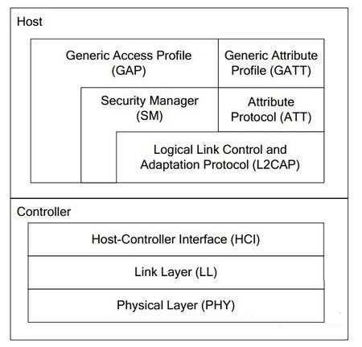

date:
updated:
updated:
BLE协议栈简介
TI的协议栈分为两部分：控制器和主机。
对于4.0以前的蓝牙，这两部分是分开的。所有profile和应用都建构在GAP或GATT之上。根据这张图，我们从底层开始介绍。TI的这款CC2540器件可以单芯片实现BLE蓝牙协议栈结构图的所有组件，包括应用程序。

- PHY层
- 1Mbps自适应跳频GFSK（高斯频移键控），运行在免证的2.4GHz。
- LL层
- LL层为RF控制器，控制设备处于准备（standby）、广播、监听/扫描（scan）、初始化、连接，这五种状态中的一种。五种状态切换描述为：未连接时，设备广播信息，另外一个设备一直监听或按需扫描，两个设备连接初始化，设备连接上了。发起聊天的设备为主设备，接受聊天的设备为从设备，同一次聊天只能有一个意见领袖，即主设备和从设备不能切换。
- HCI层
- HCI层为接口层，向上为主机提供软件应用程序接口（API），对外为外部硬件控制接口，可以通过串口、SPI、USB来实现设备控制。
- L2CAP层
- L2CAP层提供数据封装服务，允许逻辑上的点对点通讯。
- SM层
- SM层提供配对和密匙分发，实现安全连接和数据交换。
- ATT层
- ATT层负责数据检索，允许设备向另外一个设备展示一块特定的数据称之为属性，在ATT环境中，展示属性的设备称之为服务器，与它配对的设备称之为客户端。链路层的主机从机和这里的服务器、客服端是两种概念，主设备既可以是服务器，也可以是客户端。从设备亦然。
- GATT层
- GATT层定义了使用ATT的服务框架和配置文件（profiles）的结构。BLE 中所有的数据通信都需要经过GATT。GATT负责处理向上与应用打交道，其关键工作是把为检索工作提供合适的profile结构，而profile由检索关键词（characteristics）组成。
- GAP层
- GAP直接与应用程序或配置文件（profiles）通信的接口，处理设备发现和连接相关服务。另外还处理安全特性的初始化。对上级，提供应用程序接口，对下级，管理各级职能部门，尤其是指示LL层控制室五种状态切换，指导保卫处做好机要工作。
TI给出了很多Demo，这些例程都是经过了SIG评审的，ble 文件夹中有很多工程文件，有些是具体的应用，例如BloodPressure、GlucoseCollector 、GlucoseSensor 、 HeartRate 、HIDEmuKbd 等都为传感器的实际应用，有相应标准的 Profile。
其中有4种角色： SimpleBLEBroadcaster 、 SimpleBLECentral 、SimpleBLEObserver、SimpleBLEPeripheral。他们都有自己的特点。
- Broadcaster 广播员
- 非连接性的信号装置
- Observer 观察者
- 扫描得到，但不能链接
- Peripheral 从机
- 可链接，在单个链路层链接中作为从机
- Central 主机
- 扫描设备并发起链接，在单链路层或多链路层中作为主机